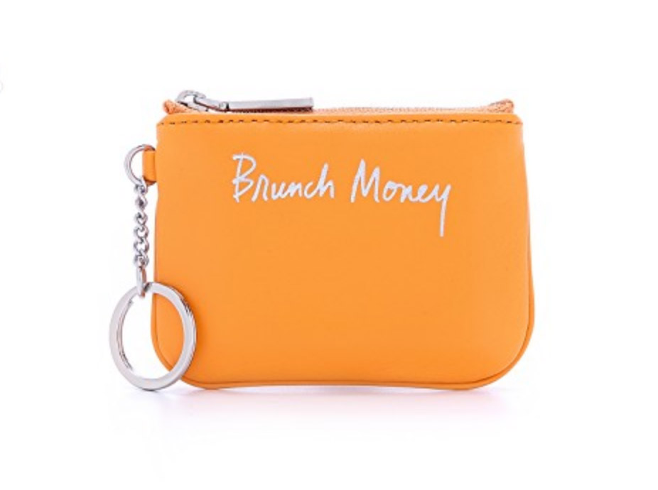

Digital Transactions: Examining Changes
from an Expanded Wallet
Qualitative Research
Summary
BACKGROUND
Historically, people conducted financial transactions primarily in person. With the rise of e-commerce and mobile technologies, transactions no longer require a person-to-person interaction. As the shift toward more digitally-based transactions continues, new methods of payment emerge to meet the particular needs of the evolving digital and mobile payment context (e.g. Venmo, Zelle, Cash App, Apple Pay, PayTM). Through various influences, consumers discover, evaluate, and integrate these new payment methods into their "wallets."
This study took a qualitative approach in exploring people's motivations and consciousness of the choice to use a certain currency through digital transactions. My team aimed to understand people's payment method usage and its sources of influences, as well as their ways of financial management. We employed constructivist grounded theory methodology through individual interviews, in situ role-playing, and ethnographic observation to examine modern day transactions through an expanded wallet.
What is known |
What this study adds |
|---|---|
Evolving attitudes around mCommerce and mobile money sharing applications (ease, convenience, trust) |
An evaluation of how users consider the suite of payment methods available within and beyond their physical wallets |
RESEARCH QUESTIONS
What makes up the experience of digital transactions?
- Discovery: How do people discover and adopt new payment methods?
- Selection: How do people choose among the many payment methods available to them?
- Impact: How do digital transactions inform people's understanding and use of money?
MY ROLE
UX Researcher, Data Analyst
TIMEFRAME
10 weeks (Winter 2019)
Research Process
METHODOLOGY
Grounded theory was utilized to construct what makes up "transaction" experience and the context our participants identified around it. Grounded theory invited us to collect, analyze, and interpret data simultaneously, building substantive theory from our data and theories from our substantive insights.
SAMPLE
We interviewed six participants, theoretically (and convenience) sampled, primarily for diversity in payment methods. This allowed us to deeply capture how people make sense of their transactions and what motivates them to select a certain payment method.
Additionally, we used ethnographic observation at a local coffee shop and a movie theatre to capture transactions in real life, where they were naturally occurring. This gave us more clarity to the physicality behind some transactions that our interview participants had spoken about.
Finally, we employed role playing to capture the cognitive context of making a transaction in a physical location.
METHODS
After each interview session, we held an interpretation session. Each session involved a moderator talking through the session's findings, a supporter adding alternative perspective, and a notetaker that asked questions to both. This allowed common ground to be established on our team around our participant data. We collected our interpretations and data in a shared spreadsheet, where we conducted initial coding. As categories started to saturate, we identified what gaps existed in our data to inform theory and explored what sample we could pursue next.
After our first rounds of interpretations, we began focused coding, exploring broader themes and categories, while examining the properties that went alongside them. We used those focused codes to construct the relationships our data conveyed between them and produced theory on the transaction experience as well as the contextual factors that impacted decisions and emotions brought to that experience.
Findings
DISCOVERY WITHIN THE TRANSACTION ECOSYSTEM
From our data set we learned the many factors and milestone events that drive people's discovery of payment methods and their financial maturity within the transaction ecosystem. We proposed the transaction ecosystem model as follows:
|
|
Enigmatic: Comparatively limited infrastructure of support at present, such as Apple Pay, along with financial products backed by cryptocurrencies. Emergent: Mobile money sharing applications like Venmo, Zelle, and Cash App used to regularly conduct various types of transactions. Established: Credit and debit cards; the first alternatives to cash. Elementary: Cash as foundational in people's financial lives. |
CONTEXTUAL CATEGORIES
|
Identity was revealed to be strongly tied to physical money, which features a face, sometimes in a literal sense, like the imprint of money. Traditional wallets store both the banknotes and an ID effectively "placing" the owner into geo-economic categories. Conversely, digital payments are faceless, independent of the language settings on a mobile device or an individual's physical location. Instead, identity is tied to the choice of a payment vehicle. |
|
|
|
Safety emerged as one of the most frequently mentioned selection criteria for a preferred payment method, often influenced by other factors such as one's previous experience and educational background. |
|
Trust was on people's minds in more ways than one. Our participants alluded to their trust (or mistrust) of the currency itself, the payment vehicle, and the transaction. |
|
|

|
Within the expanded wallet, cash serves as both a fail-safe "accessory" and a way to engender social goodwill. No participant described using cash as a primary form of payment to conduct transactions. |
|
No respondents to our screener reported having shared finances. Stories from the interviews, however, revealed intimate relationships, such as marriage, and significant, recurring financial responsibilities, that necessitated the management of money. This disconnect between the two data points highlighted a key distinction to emerge from our research: sharing money - even regularly-distributed large sums of money - does not constitute sharing finances. |
|
EXTERNAL INFLUENCES
External influences contribute to the development of the expanded wallet where people adopt different payments and even became evangelists of obscure currencies.
Discussion
PHYSICAL EXPERIENCE
Transactions date back to the dawn of human civilizations and have since been an integral element of social interactions. As technological advancement continues to accelerate, the human-to-human transactions and experiences that were born out of social and physical activities have gradually immersed in the paradigm of human-computer interactions. What will eventually become of transactions and the subsequent human experiences?
DIGITAL HANDSHAKE
The future, unbecoming or not, is upon us. The generation born in the last decade represents the first digital natives learning to orient themselves in a largely cashless, though still Westernized world. Their purchases, preferences, and passions live and die in electronic memory of a smart device. Money is an abstraction: instantaneous, invisible inflows and outflows visualized through changing zeros in the digital ledgers of decentralized financial networks. Transactions thrive and cease with a download (or deletion) of mobile apps, bypassing the "ancient" concept of internet and its protocols entirely. Coffee shops are full of people extending their hand with a shiny smartphone to hover over the tip of a scanner, held by a cashier. A brief mesmeric click completes the transaction. Totalizingly touchless: the sterile, sleek "handshake" of tomorrow.
DESIGN IMPLICATIONS
The impact of ease and barriers on a typical transaction leaves ample room to improve the experience in very natural ways; flexibility in options, incentives to try new payment methods, and automation shows natural promise to integrate easily on existing systems. Newer technologies, namely in cryptocurrencies, provoke power in traditional leaders of the space like Visa and Mastercard. What happens when those exchanges aren't needed? How will the transition affect or empower those on the other side of the coin: the merchants?
Limitations
Participant-wise, the study was limited to a convenience sample of English-speaking students at the University of Washington. Originally, we intended to conduct group interviews with cryptocurrency interest groups comprised of both students and industry professionals to widen our sample, but the scheduling did not work out. Further, we contacted other universities' special interest groups to gain insights from a different educational and geographic pool, but our interview requests were left unanswered. Finally, our participants, while diverse in age, background, geographic upbringing, and family composition, were nonetheless relatively homogenous from a cultural standpoint, being raised and educated in the U.S.
Data-wise, the collected information was entirely self-reported. We neither asked for nor were provided with access to participants' payment transaction history to corroborate their verbal accounts.
Timing-wise, given the duration of this course, we could not capture longitudinal data in relation to discovery, adoption and rejection of various digital payment methods over time.
Technology-wise, our participants all owned a smartphone and had a bank account. Consequently, their views and habits were governed by lifelong access to digital payment technologies. Due to ethical constraints, we did not extend our sample to marginalized populations without access to the said technologies (e.g. unbanked users, homeless persons), thus limiting the breadth of our insights.
Future Research
- Transaction experience for services, subscriptions, and automatic payments
- Implications for merchants
- Role of banks in an extended wallet
- Retirement and the expanded wallet